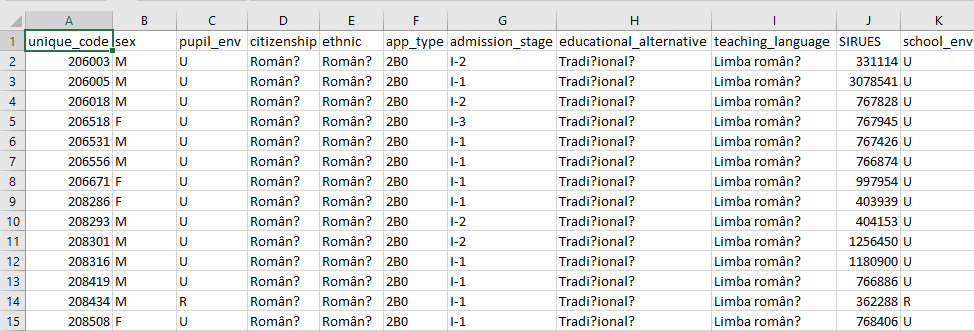

Data Gathering:
1. Search datasets that are and download datasets on websites (kaggle, Data.World etc.)
1. Elementary School Registration 2014
Source: Kaggle
This is a dataset about the situation of a elementary new students.
use twitter and news api to find relevant data
use wikipedia to find accurate text data

2. secondary_student_performance
Source: Kaggle
3. student_dropoutrate.csv
Source: Kaggle